The shape

Rules are files in the repository, evaluated by Alertmanager. Routes, receivers and inhibit rules are one reviewed object. A change to any of it is a pull request like everything else, which means the alerting config has a history and a reviewer instead of being a thing someone fixed in a hurry.
Where everything actually shows up
Discord is the entire human interface for this cluster. Not a dashboard I check — I would not check it. Channels, each with a single job, so that a policy finding and a paging incident are not sitting in the same thread arguing about what they mean.

#alerts— everything firing, every severity, plus the reconcile errors Flux reports. The record, with links to the graphs.#security— policy and scan findings. Separate because they are not incidents, and because "the cluster is fine" and "the cluster is fine but something was refused" are different sentences.#pull-requests— every change, from me and from the agent, plus a failed check in CI. The place the loop is visible.#general— what the agent posts in when it has something to say that is neither an alert nor a pull request.- A push notification, separately, for criticals only. Discord is where I read; the phone is what wakes me up.
Three of the four channels are backed by a webhook each, and a webhook is bound to the channel it was created in. That is why two producers sharing a channel have to share a webhook — Flux posts through Alertmanager's, and CI through the same one the GitHub webhook uses — and why the lines above converge in pairs. Fewer credentials to hold is the point. The cost is that losing one webhook silences one channel carrying two producers' output, not one producer's. Hermes is the exception: it holds an app token rather than a channel webhook, so it is scoped to the channels it was granted instead of being confined to one.
Everything posting in holds one channel webhook and nothing else. A webhook can add a message to the one channel it was created in: it cannot read history, cannot react, cannot join another channel, and no API client anywhere holds it. There is one consequence worth knowing — a channel webhook is permanently bound to its channel, so the security channel's webhook cannot be swapped for the alerts channel's URL. That separation is a property of the credential, not a routing rule somebody has to remember to maintain.
The agent's way out is the opposite shape: one Discord App token, minted and re-minted hourly by a sidecar the model's own container never holds. It can post, and that is very nearly all it can do. The agent is told to reply in channel, and told never to merge — but the credential can't merge either, so a prompt that gets talked out of the rule doesn't matter. A rule the model can be argued out of is not a control.
Severity decides who hears it
Warnings group. Criticals page. The two alert receivers are sibling routes with
continue, so each alert fans out to both independently and one dying doesn't silence
the other. When a receiver did break, that turned "paging is down" into "half of paging is down" —
a much smaller problem. The alert also names the leg that failed, so I don't have to deduce it
from silence.
If everything pages, nothing does. That is the whole discipline, and it is much easier to state than to hold: every alert added here has to be one I would rather stop reading than miss.
The alert that proves the pipeline works by firing
There's an alert that always fires. It isn't noise, it's a dead man's switch: its absence is the signal that the rules stopped loading, the scrape died, or the pipeline can't deliver. Any alerting system should have one, routed to a receiver you've proven works.
Silences follow the same rule. A mute that lives only in the Alertmanager API doesn't survive a rebuild of the pipeline. If a maintenance window has to be declarative, it's a route in git matched on every shape the host appears as, with a written reason and an expiry.
Alertmanager can't report its own death. Every notification it would send travels through it, so a rule that fires on an unhealthy Alertmanager is delivered by the unhealthy Alertmanager. The external probe has the same hole: it can see the host go down, and the only thing that could tell anyone is the host that went down.
So there is a scheduled job that runs outside the pipeline and posts straight to the push service — a different process on a different machine, which survives the failure it is reporting. It checks two things: that Alertmanager still answers its readiness endpoint, and that the always-firing rule above is still firing in Prometheus. That second one matters more than it looks: from inside, a Prometheus that has stopped evaluating is indistinguishable from one with nothing to report. If either check fails, the phone buzzes by a path that does not involve Alertmanager at all. That is the break glass.
The agent is the second responder, not the pager
The cluster can wake the agent on its own. A scheduled job reads what's currently firing from Alertmanager and posts the new alerts to a webhook on the agent, signed, in-cluster only. It wakes up knowing what broke, looks at the resources and logs involved, and answers in the channel. If the fix is a manifest change, it opens a pull request and stops.
It can't be pushed to directly: Alertmanager can't sign an inbound request, so that job is the sender, and it only ever forwards what Alertmanager itself is already firing. Nothing on the network can hand the agent a task.
The controls on that path matter, because this is the thing that spends money:
- A short allow-list by alert name. Not a severity filter — a list of the alerts where an unattended run is genuinely worth starting. Everything else still notifies me; it just never spends an agent run.
- An hourly poll, not every five minutes. The wake path isn't the paging path. Every allow-listed alert already reaches my phone inside its own delay window, so the agent can afford to be up to an hour behind.
- A gate so a standing alert wakes it once. The lookback window is longer than the schedule, so the same standing alert shows up in several polls in a row. A small key-value store holds one key per announced alert, and without that dedupe gate one broken thing costs a run an hour, forever.
- A hard ceiling. At most one run per poll, and a daily cap on top of that. The allow-list decides what is worth a run; the cap decides what it costs.
When that path first ran, it was the dominant cost, so it was turned off and rebuilt narrower before being turned back on. The measurement that stopped it was the whole provider account for 24 hours, not this path.
The habits that keep it trustworthy
- Exempt narrowly at the source. When a legitimate process trips a detection rule, the exemption is scoped to that process, its parent, and the host. Never to a file path, and never to an image name — a generic base image is a whole class of containers, and a path is exactly what the attacker touches.
- Measure a rule before you ship it, and check it can load. Every rule is checked against real metric data, and a rule that can't fire gets deleted rather than admired. Separately, the whole ruleset and routing tree are parsed before merge, because a config rejected on reload doesn't break one route — it stops every notification in the cluster.
- Notify once per problem. An alert is keyed on its own start time and announced once, and a request carries an idempotency key so an overlapping poll is dropped rather than doing the work twice.
- Link every notification to the graph. One that doesn't link to something actionable gets ignored at 1am, and fixing the link template pays out every single time it fires.
- Inhibit by cause. One root cause shouldn't produce nine alerts. When the cause is already waving, the symptoms go quiet.
What I've decided is not an alert
- Reboots. The nodes patch weekly and restart. That's expected, so it's a dashboard annotation, not a page. I removed the rule that would have fired every cycle.
- A host maintenance job touching an ssh directory. It's the operating system doing housekeeping, and the exemption can't be the directory itself, or the interesting case goes quiet too.
- Provider balance alarms for a home lab. Excluded by name from the wake path. The rule still fires and still notifies; it just doesn't spend an agent run on a number I've decided not to act on.
Each of those is written down where the rule lives, with the date, so the next person to see the alert doesn't re-litigate it.
assets/img/shots/alert-channel.png
A rolled-up alert in the channel: title, severity, the affected workload, the
runbook-free description, and the link into the graph. This is what arrives at 1am, so it is
the thing that has to be readable on a phone.